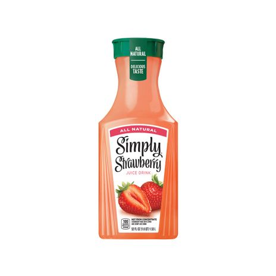

I'm gonna be real, this is probably the closest you're going to get to your criteria, probably. It's sweet and fruity, and proclaims itself to be "Simply® Strawberry", suggesting it is normal strawberry juice- exactly what you were looking for. From the look of the label, color, and flavor, it looks perfect, but why don't you take a closer look anyway?
